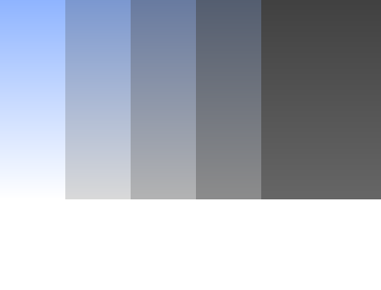

context.fillStyle will set the color for all future fills such as
context.fillRect(). It's important to note theat context.fillStyle
is not a method, it is an attribute. You set it like so:
context.lineTo(x, y) creates a path from the current point - default (0,0) -
to the point (x, y). In order to see the line you must call context.stroke().
context.save() saves all of the properties of the context. Then, when you call
context.restore() it will reset all changes to the context you've made.
This code will produce the image below (note how the second rectangle is black
and closer to the original origin despite calling translate and setting the
fillStyle earlier):
context.scale(percentX, percentY) scales the x and y coordinates of the context, making drawings
larger or smaller.
This code will produce the image below (note that all rectangles are defined to be the same size
in the code are drawn in different sizes due to the scale of the context):
context.translate(x, y) shifts the origin of the context (where the (0,0) point is)
right by x and down by y. This allows you to draw execute multiple commands in a specific
area of the context more easily.
This code will produce the image below (note how the fillRect commands are
relative to the translation point (100,100)):
Math.round(), Math.floor() and Math.ceil() will round a number to an integer.
Math.floor() will always round down while Math.ceil() will always round up.
Math.round() will round to the closest integer, either up or down.
Math.random() will produce a random decimal betweek 0 and 1. Calling it many
times will produce a different random number each time.
Often you will multiple Math.random() by another number to get a random
integer larger than 1. You may also call Math.floor() or Math.ceil() on the result
to get an rounded integer.
In the Basic Cityscape Challenge, we drew three rows of randomly-generated
buildings, creating a 3D effect by drawing the buildings in the back smaller
and darker.
In the first stage of the Animated Cityscape Challenge, we draw the
sky behind the buildings, changing the color of the sky to simulate nightfall.
Review the Basic Cityscape Challenge
Because we are extending the program for the Basic Cityscape Challenge to
animate the drawing, it's important to understand how that program works.
We start by drawing a gray rectangle (color '#CCCCCC') for
the ground beneath the buildings. Then, we use the drawBuildingRow()
function to draw three rows of buildings.
The first row of buildings is positioned at (0, 280) and drawn at 60% scale,
the second row of buildings is positioned at (0, 300) and drawn at 80% scale, and
the third row of buildings is positioned at (0, 320) and drawn at 100% scale.
Inside the drawBuildingRow() function, we use the scale
parameter to calculate the color of the buildings in the row. The smaller the scale,
the darker the buildings. Then, we use a while loop to draw buildings the width of the
canvas. To draw a building, we randomly generate the number of office units per floor,
the number of floors, the type of windows, and the type of roof for the building and
pass those values into the drawBuilding() function.
The randomInteger() function is used to generate random integers,
switch statements inside the drawWindow() and drawRoof()
functions are used to draw the four different types of windows and roofs, and
nested for loops are used to draw windows in each office unit in each building.
Please make sure you fully understand the program in the example below before continuing on in
this challenge. If you need help, visit the Basic Cityscape Challenge and its relevant lessons.
var canvas = document.getElementById('animated_cityscape_stage1_example1');
var context = canvas.getContext('2d');
context.save();
context.fillStyle = '#CCCCCC';
context.fillRect(0, 220, canvas.width, canvas.height - 220);
drawBuildingRow(0, 280, 0.6);
drawBuildingRow(0, 300, 0.8);
drawBuildingRow(0, 320, 1.0);
context.restore();
function drawBuildingRow(rowX, groundY, scale) {
context.save();
context.translate(rowX, groundY);
context.scale(scale, scale);
var c = Math.round(153 * scale);
var buildingColor = 'rgb(' + c + ', ' + c + ', ' + c + ')';
var windowColor = 'rgb(102, 102, 102)';
var x = 0;
while (x < canvas.width / scale) {
var units = randomInteger(4, 10);
var floors = randomInteger(6, 20);
var windowType = randomInteger(0, 3);
var roofType;
if (units > 8) {
roofType = randomInteger(0, 1);
} else if (units > 6) {
roofType = randomInteger(0, 2);
} else {
roofType = randomInteger(0, 3);
}
var w = 16 * units + 8;
var h = 16 * floors + 8;
drawBuilding(x, 0, w, h, units, floors, windowType, roofType, buildingColor, windowColor);
x = x + w + 12;
}
context.restore();
}
function drawBuilding(leftX, groundY, w, h, units, floors, windowType, roofType, buildingColor, windowColor) {
var x = leftX;
var y = groundY - h;
context.save();
context.translate(x, y);
context.fillStyle = buildingColor;
context.fillRect(0, 0, w, h);
drawRoof(w, roofType);
context.translate(4, 4);
context.fillStyle = windowColor;
for (var i = 0; i < floors; i = i + 1) {
context.save();
for (var j = 0; j < units; j = j + 1) {
drawWindow(windowType);
context.translate(16, 0);
}
context.restore();
context.translate(0, 16);
}
context.restore();
}
function drawWindow(windowType) {
context.save();
switch (windowType) {
case 0:
context.fillRect(4, 2, 8, 10);
break;
case 1:
context.fillRect(2, 3, 5, 8);
context.fillRect(9, 3, 5, 8);
break;
case 2:
context.fillRect(0, 3, 16, 8);
break;
case 3:
context.fillRect(5, 1, 6, 14);
break;
}
context.restore();
}
function drawRoof(w, roofType) {
context.save();
switch(roofType) {
case 0:
// draw nothing
break;
case 1:
context.fillRect(8, -16, w - 16, 16);
break;
case 2:
context.fillRect(8, -24, w - 16, 24);
context.fillRect((w - 32) / 2, -48, 32, 24);
context.fillRect((w - 8) / 2, -80, 8, 56);
break;
case 3:
context.beginPath();
context.moveTo(w / 2, -80);
context.lineTo(w / 2 + 16, -16);
context.lineTo(w / 2 - 16, -16);
context.closePath();
context.fill();
context.fillRect((w - 64) / 2, -16, 64, 16);
break;
}
context.restore();
}
function randomInteger(min, max) {
return (min + Math.floor((max - min + 1) * Math.random()));
}
Message Log
This is a lesson, not a challenge, the code runs automatically.
But change it! Play with it! Click "Run" to see your changes.
Run
Run and Focus Canvas
Reset
Canvas
(your drawing will display here)
Draw the Sky Behind the Buildings
The sky behind the buildings is not a solid color. During the day, the sky is
white along the horizon and bluer higher up. At night, the sky is gray along the
horizon and darker higher up. And as the sun sets, the sky along the horizon
turns red.
To draw the sky, we use a linear gradient. A linear gradient smoothly transitions
from one color to another, such as white to blue or gray to dark gray. In
this example, we create a linear gradient using the createLinearGradient()
method and assign it to a variable named gradient:
var gradient = context.createLinearGradient(40, 0, 360, 0);
We create a linear gradient by passing the createLinearGradient() method
the coordinates for the gradient's start position and end position. Because the two points,
(40, 0) and (360, 0), form a horizontal line, the linear gradient is horizontal. It starts
at x = 40 and ends at x = 360. The y-coordinates of the two points in a horizontal linear
gradient don't make a difference as long as they are the same.
The next step is setting the colors in the gradient:
This sets the color in the gradient at x = 40 (position 0) to 'Red'
and the color at x = 360 (position 1) to 'Black'. We also set
the color at x = 232 (position 0.6) to 'Blue'. This position is 60%
of the way from position 0 to position 1.
Finally, we assign the linear gradient stored in the variable gradient to the
context.fillStyle property and use the context.fillRect() method to
draw a filled rectangle.
Between position 0 and position 0.6, the color filling the rectangle
changes from 'Red' to 'Blue'. Between position 0.6
and position 1, the color changes from 'Blue' to 'Black'.
Change the colors in the gradient, change the position of the middle color stop, or add another
color stop with a position between 0 and 1 to see what happens. To learn more
about linear gradients, visit the
createLinearGradient()
lesson.
var canvas = document.getElementById('animated_cityscape_stage1_example2');
var context = canvas.getContext('2d');
var gradient = context.createLinearGradient(40, 0, 360, 0);
gradient.addColorStop(0, 'Red');
gradient.addColorStop(0.6, 'Blue');
gradient.addColorStop(1, 'Black');
context.fillStyle = gradient;
context.fillRect(40, 40, 320, 240);
Message Log
This is a lesson, not a challenge, the code runs automatically.
But change it! Play with it! Click "Run" to see your changes.
Run
Run and Focus Canvas
Reset
Canvas
(your drawing will display here)
Challenge 1
What your drawing should look like
Declare a variable named horizonY and assign it the value
canvas.height - 100. This sets the y-coordinate of the horizon
100 pixels above the bottom of the canvas.
Define a function named drawSky(). Inside the function, create
a vertical linear gradient so position 0 is at the horizon and
position 1 is 300 pixels above the horizon. Note that the y-coordinate
of position 1 may be negative and not visible on the canvas.
Set the color in the gradient at position 0 to 'rgb(255, 85, 85)',
the color at position 0.3 to 'rgb(102, 119, 153)', and the color at
position 1 to 'rgb(68, 85, 119)'.
Fill a rectangle with the gradient positioned at (0, 0) going down to the horizon and
across the width of the canvas.
Since the drawSky() function is setting the context.fillStyle
property, make sure to save and restore the drawing state at the start and end of the function.
Then, use the drawSky() function to draw the sky. This is approximately how the
sky will look at 6:20 pm once the cityscape is animated.
var canvas = document.getElementById('animated_cityscape_stage1_challenge1');
var context = canvas.getContext('2d');
// DECLARE AND INITIALIZE THE horizonY VARIABLE HERE
// CALL THE drawSky() FUNCTION HERE TO DRAW THE SKY
// DEFINE THE drawSky() FUNCTION HERE
// INSIDE THE drawSky() FUNCTION, CREATE A VERTICAL LINEAR GRADIENT
// FROM THE HORIZON TO A POINT 300 PIXELS ABOVE THE HORIZON.
// SET THE COLORS IN THE GRADIENT.
// USE THE GRADIENT TO FILL A RECTANGLE POSITIONED AT (0, 0) THAT GOES
// DOWN TO THE HORIZON AND ACROSS THE WIDTH OF THE CANVAS.
Message Log
This is a lesson, not a challenge, the code runs automatically.
But change it! Play with it! Click "Run" to see your changes.
Run
Run and Focus Canvas
Reset
Canvas
(your drawing will display here)
Change Ground and Sky Colors Over Time
The colors used to draw the sky in Challenge 1 are the colors of the sky at
6:20 pm in the animated cityscape. However, the colors of the sky are slightly
different at 6:10 pm and 6:30 pm. Because we change the color of the ground and
sky forty times between 5:00 pm and 7:00 pm, we need an easy way to calculate
these colors automatically.
In this example, we use two for loops to draw two rows of rectangles. The first
for loop uses the variable i as its counter. Inside the for loop,
we use an if statement to calculate the height of the rectangle depending on the
value of the counter. Note how the height of the rectangle starts at 40, climbs
steadily to 100, and then levels out again. We want the ground and sky colors to
change in the same way as the sun sets.
if (i < 6) {
h = 40;
} else if (i > 15) {
h = 100;
} else {
h = 40 + 60 * (i - 6) / 9;
}
When the program reaches the if statement, it checks the first condition. If
i < 6, the height of the rectangle is set to 40. If the first condition
is false, then the program checks the second condition. If i > 15, the
height of the rectangle is set to 100. If both conditions are false, then the program
runs the code block in the else clause and the height of the rectangle is set to the
value of 40 + 60 * (i - 6) / 9.
The expression 40 + 60 * (i - 6) / 9 is designed to increase from 40 to
100 as i increases from 6 to 15. Note that (6 - 6) / 9 = 0
when i is 6 and (15 - 6) / 9 = 1 when i is 15.
In the second for loop, we design the expression inside the if statement so the height
of the rectangle decreases from 160 to 50 as j increases from 3 to 10. Can
you update the second for loop so the height of the rectangle decreases from 150 to 90
as j increases from 8 to 13?
var canvas = document.getElementById('animated_cityscape_stage1_example3');
var context = canvas.getContext('2d');
var x, y, h;
context.fillStyle = 'Crimson';
for (var i = 0; i < 20; i = i + 1) {
if (i < 6) {
h = 40;
} else if (i > 15) {
h = 100;
} else {
h = 40 + 60 * (i - 6) / 9;
}
x = 20 * i;
y = 120 - h;
context.fillRect(x, y, 18, h);
}
context.fillStyle = 'BlueViolet';
for (var j = 0; j < 20; j = j + 1) {
if (j < 3) {
h = 160;
} else if (j > 10) {
h = 50;
} else {
h = 160 - 110 * (j - 3) / 7;
}
x = 20 * j;
y = 300 - h;
context.fillRect(x, y, 18, h);
}
Message Log
This is a lesson, not a challenge, the code runs automatically.
But change it! Play with it! Click "Run" to see your changes.
Run
Run and Focus Canvas
Reset
Canvas
(your drawing will display here)
Challenge 2
What your drawing should look like
The drawGround() function will draw the rectangle for the
ground using darker shades of gray as the time increases from 5:00 pm to
7:00 pm. Because we are calculating RGB values based on the time, we
start by defining the rgbColor() function to make it easy to
combine RGB values into a text string in 'rgb()' notation.
The rgbColor() function has three parameters: r,
g, and b. Round the values stored in the three parameters
using the Math.round() function and combine them into a text
string in 'rgb()' notation using the + operator. Then, return the text
string from the function using a return statement.
If you need help, examine the drawBuildingRow() and randomInteger()
functions in the Basic Cityscape Challenge program at the top of the page to see how we
combined values into a text string to describe a row's building color and how we returned randomly
generated integers from a function, or visit the
fillStyle
and
Functions
lessons.
Inside the drawGround() function, declare the variable c. We
can use this one variable to store the red, green, and blue values of the ground's color
because all three values are the same. If time < 5, set c = 204.
If time > 7, set c = 102. If time is between 5 and 7,
create an expression so c decreases from 204 to 102 as time increases
from 5 to 7. Pass the value of c into the rgbColor() function and
assign the color returned from the function to the context.fillStyle property.
Remember, c is the value of the red, green, and blue values of the color.
Then, use the context.fillRect() method to draw a rectangle from (0, horizonY)
to the bottom of the canvas and the width of the canvas. Make sure to save and restore the drawing
state since the drawGround() function is setting the context.fillStyle property.
Finally, set the value of horizonY so the y-coordinate of the horizon is 100 pixels
above the bottom of the canvas. The program should now draw slices of the ground as it gets darker
at 5:00, 5:30, 6:00, 6:30, and 7:00 pm.
Previous Challenge:
View your
code from
Stage
1
Challenge
1
to use on this challenge.
Code Missing:
You have not yet entered any code in to the previous challenge:
Stage
1
Challenge
1
Stage
1
Challenge
1
Editor
(write code below)
var canvas = document.getElementById('animated_cityscape_stage1_challenge2');
var context = canvas.getContext('2d');
var time;
var horizonY; // Set the y-coordinate of the horizon so it is 100 pixels above the bottom of the canvas
context.save();
time = 5.0;
drawGround(); // Draw the ground at 5:00 pm
context.translate(72, 0);
time = 5.5;
drawGround(); // Draw the ground at 5:30 pm
context.translate(72, 0);
time = 6.0;
drawGround(); // Draw the ground at 6:00 pm
context.translate(72, 0);
time = 6.5;
drawGround(); // Draw the ground at 6:30 pm
context.translate(72, 0);
time = 7.0;
drawGround(); // Draw the ground at 7:00 pm
context.restore();
function rgbColor(r, g, b) {
// Create and return a text string in rgb() notation after rounding the values stored in r, g, and b
}
function drawGround() {
// Declare the variable c
// Use an if statement to calculate the value of c
// Use the rgbColor() function to get the color of the ground and assign it to the fillStyle
// Draw a filled rectangle from (0, horizonY) to the bottom of the canvas and the width of the canvas
}
Message Log
This is a lesson, not a challenge, the code runs automatically.
But change it! Play with it! Click "Run" to see your changes.
Run
Run and Focus Canvas
Reset
Canvas
(your drawing will display here)
Challenge 3

What your drawing should look like
Now we are going to update the drawSky() function so the
gradient used to fill the sky also changes depending on the time of day.
First, we will make the sky change from blue to dark gray. We will add
the red horizon later.
Inside the drawSky() function, start by declaring six
variables. To keep the function compact, we can declare multiple variables
on each line. Just separate the variables with commas and make sure to end
each line with a semicolon.
var r0, g0, b0;
var r1, g1, b1;
The variables r0, g0, and b0 are the
RGB values of the color at position 0 in the gradient. The variables
r1, g1, and b1 are the RGB values of the
color at position 1.
If time < 5, set r0, g0, and b0
to 255; and set r1 to 102, g1 to 153, and b1
to 255. And just as we can declare multiple variables on one line, we can also assign
multiple variables on one line.
r0 = 255, g0 = 255, b0 = 255; // The sky is white at position 0
r1 = 102, g1 = 153, b1 = 255; // The sky is blue at position 1
If time > 7, set r0, g0, and b0 to 102;
and set r1, g1, and b1 to 51.
r0 = 102, g0 = 102, b0 = 102; // The sky is gray at position 0
r1 = 51, g1 = 51, b1 = 51; // The sky is dark gray at position 1
Finally, if time < 5 and time > 7 are both false, create
expressions to calculate the RGB values of the colors at both positions as time
increases from 5 to 7. This changes the color of the sky at position 0 from white
to gray and the color of the sky at position 1 from blue to dark gray.
r0: 255 → 102
g0: 255 → 102
b0: 255 → 102
r1: 102 → 51
g1: 153 → 51
b1: 255 → 51
Now, just as in Challenge 1, create a vertical linear gradient so position
0 is at the horizon and position 1 is 300 pixels above the horizon.
Instead of hardcoding three color stops, add color stops at positions 0
and 1 and use the RGB values stored in the six variables to set the colors
using the rgbColor() function.
Fill a rectangle with the gradient positioned at (0, 0) going down to the horizon and
across the width of the canvas.
Then, set the value of horizonY so the y-coordinate of the horizon is 100 pixels
above the bottom of the canvas. The program should now draw slices of the sky as it gets darker
at 5:00, 5:30, 6:00, 6:30, and 7:00 pm.
Previous Challenge:
View your
code from
Stage
1
Challenge
2
to use on this challenge.
Code Missing:
You have not yet entered any code in to the previous challenge:
Stage
1
Challenge
2
Stage
1
Challenge
2
Editor
(write code below)
var canvas = document.getElementById('animated_cityscape_stage1_challenge3');
var context = canvas.getContext('2d');
var time;
var horizonY; // Set the y-coordinate of the horizon so it is 100 pixels above the bottom of the canvas
context.save();
time = 5.0;
drawSky(); // Draw the sky at 5:00 pm
context.translate(72, 0);
time = 5.5;
drawSky(); // Draw the sky at 5:30 pm
context.translate(72, 0);
time = 6.0;
drawSky(); // Draw the sky at 6:00 pm
context.translate(72, 0);
time = 6.5;
drawSky(); // Draw the sky at 6:30 pm
context.translate(72, 0);
time = 7.0;
drawSky(); // Draw the sky at 7:00 pm
context.restore();
function rgbColor(r, g, b) {
// Copy the function definition from Challenge 2
}
function drawSky() {
// Declare r0, g0, b0, r1, g1, b1
// Use an if statement to calculate the values assigned to r0, g0, b0, r1, g1, b1
// Create a vertical linear gradient from the horizon to a point 300 pixels above the horizon
// Add color stops at positions 0 and 1
// Use the gradient to fill a rectangle positioned at (0, 0) that goes down to the horizon and across the width of the canvas
}
Message Log
This is a lesson, not a challenge, the code runs automatically.
But change it! Play with it! Click "Run" to see your changes.
Run
Run and Focus Canvas
Reset
Canvas
(your drawing will display here)
Challenge 4
What your drawing should look like
To turn the sky along the horizon red as the sun sets, we need to add a
third color stop between positions 0 and 1. The
third color stop will confine the red color to a narrow band.
Start by setting horizonY, the y-coordinate of the horizon,
and copying the definitions for the rgbColor() and drawSky()
functions from Challenge 3.
Inside the drawSky() function, declare the variables pMiddle,
rMiddle, gMiddle, and bMiddle for the middle color
stop. We are using pMiddle to set the position of the color stop. By starting
at position 1 and moving down to position 0, it will confine the
red color to a narrower and narrower band until it disappears completely.
If time < 5 or time > 7, set pMiddle to -1.
Why are we setting pMiddle to -1? Before 5:00 pm and after 7:00 pm, we only
need to add color stops at positions 0 and 1; we aren't adding
a third color stop at position pMiddle. By setting pMiddle to -1,
we are letting ourselves know not to add the third color stop later on.
In the code block for the else clause, change the calculations for the color at
position 0 and add the calculations for the color at position pMiddle.
The calculations for the color at position 1 stay the same.
r0: 255
g0: 255 → 0
b0: 255 → 0
pMiddle: 1 → 0
rMiddle: 102
gMiddle: 153 → 102
bMiddle: 255 → 102
This changes the color of the sky at position 0 from white to red
and the color of the sky at position 1 from blue to dark gray. We
use the middle color stop at position pMiddle to make the red band
at the horizon narrower. The color of the sky at the middle color stop changes
from blue to gray, but it also moves closer to the horizon as pMiddle
changes from 1 to 0.
After creating the linear gradient and adding color stops at positions 0
and 1, add the middle color stop only if pMiddle >= 0. If
pMiddle is -1, the program will skip this step and the middle color stop
won't be added.
if (pMiddle >= 0) {
gradient.addColorStop(pMiddle, rgbColor(rMiddle, gMiddle, bMiddle));
}
The program should now draw slices of the sky as it gets darker and redder along
the horizon at 5:00, 5:30, 6:00, 6:30, and 7:00 pm. If you need help with if statements
and linear gradients, visit the
If Statements
and
createLinearGradient()
lessons.
Previous Challenge:
View your
code from
Stage
1
Challenge
3
to use on this challenge.
Code Missing:
You have not yet entered any code in to the previous challenge:
Stage
1
Challenge
3
Stage
1
Challenge
3
Editor
(write code below)
var canvas = document.getElementById('animated_cityscape_stage1_challenge4');
var context = canvas.getContext('2d');
var time;
var horizonY; // Set the y-coordinate of the horizon so it is 100 pixels above the bottom of the canvas
context.save();
time = 5.0;
drawSky(); // Draw the sky at 5:00 pm
context.translate(72, 0);
time = 5.5;
drawSky(); // Draw the sky at 5:30 pm
context.translate(72, 0);
time = 6.0;
drawSky(); // Draw the sky at 6:00 pm
context.translate(72, 0);
time = 6.5;
drawSky(); // Draw the sky at 6:30 pm
context.translate(72, 0);
time = 7.0;
drawSky(); // Draw the sky at 7:00 pm
context.restore();
function rgbColor(r, g, b) {
// Copy the function definition from Challenge 3
}
function drawSky() {
// Copy the function definition from Challenge 3
// Declare variables pMiddle, rMiddle, gMiddle, bMiddle for the middle color stop
// Set pMiddle to -1 if time < 5 or time > 7
// Update p0, g0, b0 to go from (255, 255, 255) to (255, 0, 0)
// Calculate pMiddle to go from 1 to 0
// Calculate rMiddle, gMiddle, bMiddle to go from (102, 153, 255) to (102, 102, 102)
// Add the middle color stop if pMiddle >= 0
}
Message Log
This is a lesson, not a challenge, the code runs automatically.
But change it! Play with it! Click "Run" to see your changes.
Run
Run and Focus Canvas
Reset
Canvas
(your drawing will display here)
Update the Time and Redraw the Scene with a Mouse Click
At this point, we can draw the sky and ground at any time of day by manually
setting the time variable. The next step is writing a program
which updates the time variable and redraws the scene automatically.
A JavaScript program is triggered by events. So far, we've done all of our
drawing immediately when the page first loads. But we can also tell our program
to listen for events and run specific functions when those events occur.
In this example, we run the following code when the page loads:
var canvas = document.getElementById('animated_cityscape_stage1_example4');
var context = canvas.getContext('2d');
var squareX, squareY;
initScene();
canvas.addEventListener('click', updateScene);
We start by storing a reference to the canvas and the canvas's context in the
variables canvas and context. Then, we declare the global
variables squareX and squareY. We need to declare these
variables globally so all of our functions can use them and the values stored in them
are persistent and aren't deleted once a function ends. To learn more about variables
and scope, visit the
Variables
lesson. Finally, we call the initScene() function and use the
addEventListener() method to register an event listener on the canvas
object. Note: "init" is short for initialize.
The initScene() function sets the initial values of squareX
and squareY and calls the drawScene() function:
By registering to listen for 'click' events, the program will
automatically call the updateScene() function whenever a mouse
click is detected on the canvas. Note: Because we are passing the
updateScene() function into the addEventListener()
method as a variable, we don't include parentheses after the function name. To learn
more about passing functions as variables and registering event listeners, visit the
Functions
and
Event Listeners
lessons.
The updateScene() method adds 30 to squareX and 20
to squareY before calling the drawScene() function
and drawing another square:
function updateScene() {
squareX += 30; // This is a shorter way of writing squareX = squareX + 30
squareY += 20; // This is a shorter way of writing squareY = squareY + 20
drawScene();
}
Now we can automatically update the drawing on the canvas simply by clicking
on it. Note that the new scene is drawn on top of the existing scene. If we
wanted to redraw the square and make it look like the square is moving, we'd
have to clear the canvas first.
var canvas = document.getElementById('animated_cityscape_stage1_example4');
var context = canvas.getContext('2d');
var squareX, squareY;
initScene();
canvas.addEventListener('click', updateScene);
function initScene() {
squareX = 10;
squareY = 10;
drawScene();
}
function drawScene() {
context.save();
context.fillStyle = 'RoyalBlue';
context.fillRect(squareX, squareY, 20, 20);
context.restore();
}
function updateScene() {
squareX += 30; // This is a shorter way of writing squareX = squareX + 30
squareY += 20; // This is a shorter way of writing squareY = squareY + 20
drawScene();
}
Message Log
This is a lesson, not a challenge, the code runs automatically.
But change it! Play with it! Click "Run" to see your changes.
Run
Run and Focus Canvas
Reset
Canvas
(your drawing will display here)
Challenge 5
What your drawing should look like at 6:12 pm
Write a program that increases the time and redraws the scene
when a mouse click is detected on the canvas.
Start by copying the definitions for the drawSky(),
drawGround(), and rgbColor() functions from Challenges 2 and 4.
Inside the initScene() function, set time to 5,
set horizonY so the horizon is 100 pixels above the bottom of
the canvas, and then call the drawScene() function.
Inside the drawScene() function, draw the sky and ground. Then,
call the drawTime() function to automatically draw the time in the
bottom left corner of the canvas.
Inside the updateScene() function, increase the time
by 0.2 if time < 7, else reset the time back to 5.
Then, call the drawScene() function to draw a new scene on top of
the current one.
Press "Run" and click on the canvas enough times to see the sky and ground change
color between 5:00 and 7:00 pm. Once you feel satisfied that the scene is updating
and drawing correctly, mark the challenge as complete by selecting "Yes, it looks good".
Previous Challenge:
View your
code from
Stage
1
Challenge
4
to use on this challenge.
Code Missing:
You have not yet entered any code in to the previous challenge:
Stage
1
Challenge
4
Stage
1
Challenge
4
Editor
(write code below)
var canvas = document.getElementById('animated_cityscape_stage1_challenge5');
var context = canvas.getContext('2d');
var time;
var horizonY;
initScene();
canvas.addEventListener('click', updateScene);
function initScene() {
// Set the time to 5
// Set horizonY so the horizon is 100 pixels above the bottom of the canvas
// Draw the scene
}
function drawScene() {
// Draw the sky
// Draw the ground
drawTime(); // Draw the time in the bottom left corner
}
function updateScene() {
// If time < 7, increase the time by 0.2, else reset the time back to 5
// Draw the scene
}
function drawSky() {
// Copy the function definition from Challenge 4
}
function drawGround() {
// Copy the function definition from Challenge 2
}
function rgbColor(r, g, b) {
// Copy the function definition from Challenge 4
}
function drawTime() {
var t;
var h = Math.floor(time);
var m = Math.round(60 * (time - h));
if (m >= 10) {
t = h + ':' + m;
} else {
t = h + ':0' + m;
}
context.save();
context.fillStyle = 'White';
context.font = '16px Arial';
context.fillText(t, 10, canvas.height - 10);
context.restore();
}
Message Log
This is a lesson, not a challenge, the code runs automatically.
But change it! Play with it! Click "Run" to see your changes.
Run
Run and Focus Canvas
Reset
Canvas
(your drawing will display here)
Update the Time and Redraw the Scene with a Timer
Instead of using a mouse click to update the time and redraw the scene,
we are going to use a timer.
In this example, we set up a timer to update the scene from the previous
example. We start by declaring the global variable interval. Then,
instead of adding an event listener to the canvas object to detect mouse
clicks, we use the setInterval() method to create a timer that will
automatically call the updateScene() function every 25 milliseconds
and we store a reference to the timer in the variable interval.
var interval;
interval = setInterval(updateScene, 25); // Call the updateScene() function every 25 milliseconds
Again, because we are passing the updateScene() function into
the setInterval() method as a variable, we don't include
parentheses at the end of the function name. The number 25 tells
the timer how long to wait before calling the updateScene()
function again. The setInterval() method measures time in
milliseconds and there are 1000 milliseconds in one second. So, if the timer
calls the updateScene() function every 25 milliseconds, it will
update the scene 40 times per second (1000 ÷ 25 = 40).
Inside the updateScene() function, we increase squareX
and squareY by 3 and 2, instead of 30 and 20, so the square doesn't
move as far in each update. Then, if squareX > canvas.width, which
means the latest square is positioned past the right edge of the canvas, we cancel
the timer and stop updating the scene by passing the reference stored in the
interval variable into the clearInterval() method.
function updateScene() {
squareX += 3; // This is a shorter way of writing squareX = squareX + 3
squareY += 2; // This is a shorter way of writing squareY = squareY + 2
drawScene();
if (squareX > canvas.width) {
clearInterval(interval); // Cancel the timer and stop updating the scene
}
}
Finally, inside the drawScene() function, before drawing the
square, we draw a rectangle filled with the color 'Cornsilk'
covering the entire canvas. This will cover the previous scene, so now it
looks like one square is moving instead of a new square being drawn each time.
function drawScene() {
context.save();
context.fillStyle = 'Cornsilk';
context.fillRect(0, 0, canvas.width, canvas.height); // Draw a rectangle over the entire canvas
context.fillStyle = 'RoyalBlue';
context.fillRect(squareX, squareY, 20, 20);
context.restore();
}
Press "Run" to reload the page and start the animation.
See what happens if you don't draw a rectangle over the previous scene or if
you change how far the square moves or the time interval between updates. Note:
if you try to update the scene too quickly, the program won't be able to keep
up and the animation may stutter. To learn more setting timers, visit the
setInterval()
lesson.
var canvas = document.getElementById('animated_cityscape_stage1_example5');
var context = canvas.getContext('2d');
var interval;
var squareX, squareY;
initScene();
interval = setInterval(updateScene, 25);
function initScene() {
squareX = 10;
squareY = 10;
drawScene();
}
function drawScene() {
context.save();
context.fillStyle = 'Cornsilk';
context.fillRect(0, 0, canvas.width, canvas.height); // Draw a rectangle over the entire canvas
context.fillStyle = 'RoyalBlue';
context.fillRect(squareX, squareY, 20, 20);
context.restore();
}
function updateScene() {
squareX += 3; // This is a shorter way of writing squareX = squareX + 3
squareY += 2; // This is a shorter way of writing squareY = squareY + 2
drawScene();
if (squareX > canvas.width) {
clearInterval(interval); // Cancel the timer and stop updating the scene
}
}
Message Log
This is a lesson, not a challenge, the code runs automatically.
But change it! Play with it! Click "Run" to see your changes.
Run
Run and Focus Canvas
Reset
Canvas
(your drawing will display here)
Challenge 6
Copy the program from Challenge 5.
Then, change the program so that, instead of listening for mouse clicks to
update the scene, a timer automatically calls the updateScene()
function every 50 milliseconds.
Inside the updateScene() function, increase the time by 0.05
and, instead of resetting the time back to 5, cancel the timer and stop updating
the scene if time > 7.
Press "Run" and watch the sky and ground change color between 5:00 and 7:00 pm.
If you need to slow the animation down to get a better look, increase the time
interval passed into the setInterval() method. Once you feel satisfied
that the scene is updating and drawing correctly, mark the challenge as complete by
selecting "Yes, it looks good".
Previous Challenge:
View your
code from
Stage
1
Challenge
5
to use on this challenge.
Code Missing:
You have not yet entered any code in to the previous challenge:
Stage
1
Challenge
5
Stage
1
Challenge
5
Editor
(write code below)
var canvas = document.getElementById('animated_cityscape_stage1_challenge6');
var context = canvas.getContext('2d');
var time;
var horizonY;
initScene();
canvas.addEventListener('click', updateScene);
function initScene() {
// Copy the function definition from Challenge 5
}
function drawScene() {
// Copy the function definition from Challenge 5
}
function updateScene() {
// Copy the function definition from Challenge 5
// Increase the time by 0.05
// If time >= 7, cancel the timer and stop updating the scene
}
function drawSky() {
// Copy the function definition from Challenge 5
}
function drawGround() {
// Copy the function definition from Challenge 5
}
function rgbColor(r, g, b) {
// Copy the function definition from Challenge 5
}
function drawTime() {
var t;
var h = Math.floor(time);
var m = Math.round(60 * (time - h));
if (m >= 10) {
t = h + ':' + m;
} else {
t = h + ':0' + m;
}
context.save();
context.fillStyle = 'White';
context.font = '16px Arial';
context.fillText(t, 10, canvas.height - 10);
context.restore();
}
Message Log
This is a lesson, not a challenge, the code runs automatically.
But change it! Play with it! Click "Run" to see your changes.
Run
Run and Focus Canvas
Reset
Canvas
(your drawing will display here)
Play and Pause the Scene
In this example, we add event listeners to the previous example's program
to play and pause the scene.
We can register our program to listen for more than mouse click events. On
a web page, only one HTML element can have the focus at a time. The focus
determines which element is actively receiving keyboard events. On this page
alone there are thirteen editors. It would get kind of crazy if you were typing
into more than one editor at a time.
Note: A canvas element does not normally receive the focus. We have enabled
each canvas to receive the focus by setting its tabindex attribute.
That's not something you need to know about until you start creating the HTML
for your own web pages.
Because we have enabled each canvas to receive the focus, clicking on a
canvas selects it and triggers a 'focus' event. Clicking on a
different part of the page deselects it and triggers a 'blur'
event. We start by adding event listeners to play the scene when the canvas
receives a 'focus' event and pause the scene when the canvas
receives a 'blur' event.
Instead of starting the timer when the page first loads, we start the timer
inside the playScene() function. We also check the position of
the last square before starting the timer. If the last square is off the canvas,
we reset it's position.
function playScene() {
if (squareX > canvas.width) {
squareX = 10;
squareY = 10; // Reset the square's position
}
interval = setInterval(updateScene, 25);
}
Inside the pauseScene() function, we cancel the timer and
draw the text string 'Click to Play' in the center of the
canvas so the user knows how to start the animation.
We also call the pauseScene() function when the page first loads
so the 'Click to Play' text string is drawn right away.
Then, inside the updateScene() function, instead of canceling
the timer if squareX > canvas.width, we use the blur()
method to blur the canvas. When the canvas loses the focus, it receives a
blur event and the pauseScene() function is called.
function updateScene() {
squareX += 3; // This is a shorter way of writing squareX = squareX + 3
squareY += 2; // This is a shorter way of writing squareY = squareY + 2
drawScene();
if (squareX > canvas.width) {
canvas.blur(); // Remove the focus from the canvas
}
}
Click on the canvas to start the animation. The animation will continue
running until you click on a different part of the page or until the latest
square is positioned past the right edge of the canvas. If you restart the
animation and the latest square was positioned past the right edge of the
canvas, squareX and squareY are reset and the animation
starts again from the beginning.
var canvas = document.getElementById('animated_cityscape_stage1_example6');
var context = canvas.getContext('2d');
var interval;
var squareX, squareY;
initScene();
pauseScene();
canvas.addEventListener('focus', playScene);
canvas.addEventListener('blur', pauseScene);
function initScene() {
squareX = 10;
squareY = 10;
drawScene();
}
function drawScene() {
context.save();
context.fillStyle = 'Cornsilk';
context.fillRect(0, 0, canvas.width, canvas.height); // Draw a rectangle over the entire canvas
context.fillStyle = 'RoyalBlue';
context.fillRect(squareX, squareY, 20, 20);
context.restore();
}
function updateScene() {
squareX += 3; // This is a shorter way of writing squareX = squareX + 3
squareY += 2; // This is a shorter way of writing squareY = squareY + 2
drawScene();
if (squareX > canvas.width) {
canvas.blur(); // Remove the focus from the canvas
}
}
function playScene() {
if (squareX > canvas.width) {
squareX = 10;
squareY = 10; // Reset the square's position
}
interval = setInterval(updateScene, 25);
}
function pauseScene() {
clearInterval(interval);
context.save();
context.fillStyle = 'Black';
context.font = '16px Arial';
context.textAlign = 'center';
context.fillText('Click to Play', canvas.width / 2, canvas.height / 2);
context.restore();
}
Message Log
This is a lesson, not a challenge, the code runs automatically.
But change it! Play with it! Click "Run" to see your changes.
Run
Run and Focus Canvas
Reset
Canvas
(your drawing will display here)
Challenge 7
Copy the program from Challenge 6.
Then, change the program so the scene is initially paused and the time set
to 2. Play the scene when the canvas receives the focus and continue playing
the scene until the canvas loses the focus or until time > 12. If
the canvas receives the focus and the time is already greater than 12, reset
the time back to 2 and replay the scene from the beginning.
Press "Run" and click on the canvas to start playing the scene. Once you feel
satisfied that the scene is playing and pausing correctly, mark the challenge
as complete by selecting "Yes, it looks good".